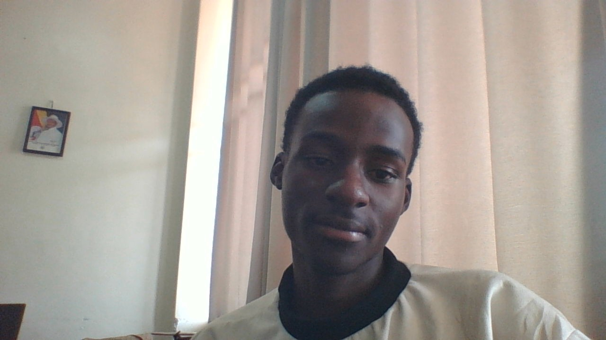

Wagoli Patrick | WDD 130

Hello, my name is Wagoli Patrick. I am from Uganda, and I enjoy swimming and reading. I am excited to learn more about web development in WDD 130.

Hello, my name is Wagoli Patrick. I am from Uganda, and I enjoy swimming and reading. I am excited to learn more about web development in WDD 130.